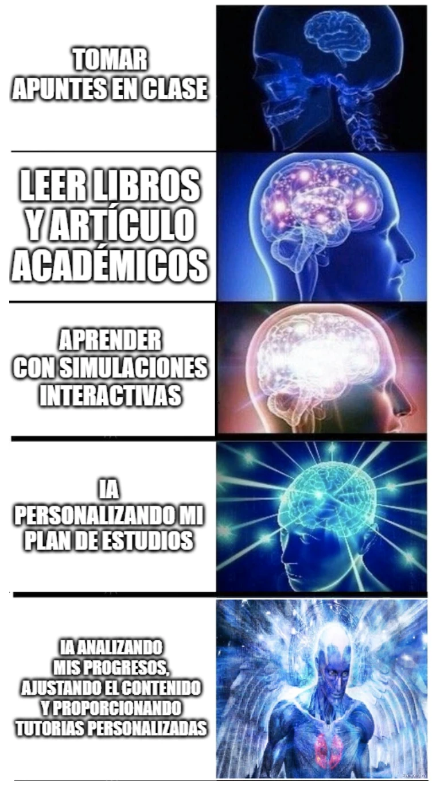

estrategIA #34 ·
Del cuaderno al tutor personal
El contexto
Salman Khan, fundador de Khan Academy, defendía en el libro comentado ese mes una educación más personalizada con IA. El meme imagina un recorrido desde tomar apuntes hasta contar con un tutor que adapta las explicaciones y los ejercicios al progreso de cada estudiante.
Publicado en: estrategIA #34: Abrazando la revolución de la inteligencia artificial en la educación: la visión de Salman Khan
Leer el texto de la imagen
TOMAR APUNTES EN CLASE LEER LIBROS Y ARTÍCULO ACADÉMICOS APRENDER CON SIMULACIONES INTERACTIVAS IA PERSONALIZANDO MI PLAN DE ESTUDIOS IA ANALIZANDO MIS PROGRESOS, AJUSTANDO EL CONTENIDO Y PROPORCIONANDO TUTORÍAS PERSONALIZADAS